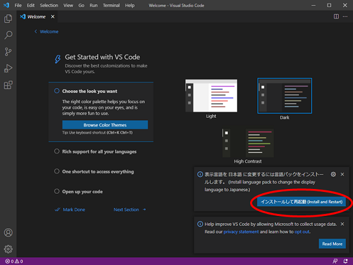
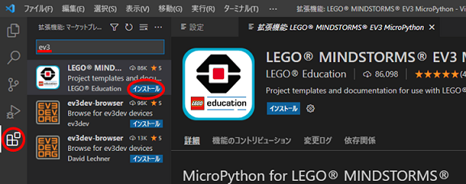
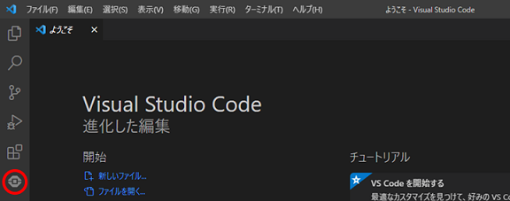

開発環境の構築
Visual Studio Code(VS Code)を用いてプログラムを作成します．
VS Code の設定
VS Code のインストール
VS Code がインストール済みの場合は，拡張機能の EV3 MicroPython をインストールします．
-
VS Code からセットアップファイルをダウンロードしてインストールします．
-
VS Code を初めて起動すると，右下に日本語の言語パックのインストールのダイアログが表示されるので，
インストールして再起動をクリックします．VS Code が日本語で起動します．

注意
しばらくするとダイアログが消えるので，ダイアログが消えた場合は，拡張機能からインストールします．
また，英語表記のままで良ければ，インストールする必要はありません．
EV3 MicroPython のインストール
-
開発に必要な拡張機能をインストールします．サイドバーの拡張機能から検索欄に
ev3と入力する．検索結果にあるEV3 MicroPythonのインストールをクリックしてインストールします．
 -
インストールするとサイドバーに
EV3 MicroPythonのアイコンが表示されます．
